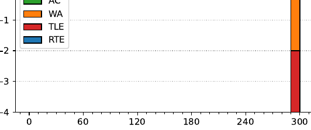

47th ICPC World Finals
Problem authors: Derek Kisman and Matthias Ruhl
Solved by 0 teams.
Shortest judge solution: 2987 bytes.

This was, in the judges' opinion, the hardest problem in this set. It can be solved using fairly complicated dynamic programming.
You can start by thinking about how to get the first few elements of the generated sequence. The first one is actually quite easy: the number of sequences that start with t is the number of ways of writing t as ∑ki=1 ciai for some positive integers k, ci, ai.
Figuring out the extensions of this is considerably trickier, because now the ci's and ai's interact with each other. In general, suppose you want to count how many ways an order-k sequence can start with (ak+1, ak+2, . . . , ak+ℓ). If you know the values of ck and ak, then you can essentially subtract the contribution of these and try to continue from there; but you still need to remember the original values of ak, . . . , ak+ℓ−2 because these will be make a contribution multiplied by ck−1.
After some thought, a useful function to compute is the following. For a vector x = (x1, . . . , xℓ) of length ℓ and a vector a = (a1, . . . , aℓ−1) of length ℓ − 1, define f(x, a) to be the number of possible choices of r and positive integers a0, a−1, . . . , a−(r−1) and c1, . . . , cr such that, for all 1 ≤ i ≤ ℓ it holds that
r
x i = ∑ a −r + i + j −1 · c j
j =1
Note that, if a = (x1, . . . , xℓ−1), then f(x, a) counts exactly how many generated sequences start with x. Furthermore, we can define a nice recurrence for f:
1
f (x, a) =
0
∑ a0,c f (x − c · (a0 , a1 , . . . , aℓ−1), (a0 , . . . , aℓ−2))
if x is identically 0
if x has any negative entries
otherwise
In the sum, a0 and c range over “all” positive integers, but can clearly be limited to those such that x − c · (a0, . . . , aℓ−1) is a non-negative vector.
Ok, so implementing this function f (and adding memoization), we have a way of counting the number of sequences with a given start, but this is still very slow, because as written there are lots of dead-end paths explored, that never lead to us reaching the all-zero vector (and therefore do not contribute anything to the count).
From here, there are at least two approaches for making the solution fast enough:
One useful idea for computing f faster is that if f(x, a) > 0 then f(x', a') > 0 where x' and a' are the vectors of length ℓ − 1 and ℓ − 2 where we remove the last element. So when computing f(x, a), we can add a pruning step which first computes f(x', a') and checks that this is positive. This improves the running time dramatically and makes the solution fast enough.
Furthermore, we can relatively easily change f so that we instead count, given y = (y1, . . . , yℓ), the number of generated sequences with a prefix of the form (y1, . . . , yℓ−1, ≤ yℓ). With that in hand we can binary search for the next extension.
One last idea here is that, once we have honed in on a prefix where there are relatively few (say, less than 500 000 different sequences generating that prefix, we can create all of those sequences and then iteratively evolve them until we find the right one.
A cleaner idea is to change the function f to not only count the number of sequences with the given prefix, but also all possible extensions, together with their counts. That way, there is no need to binary search for the next entry and we can generate the prefix one step at a time until we are at the right one.